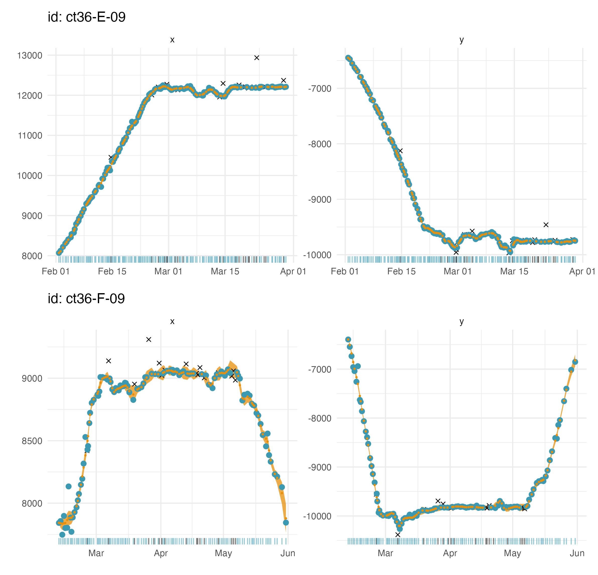
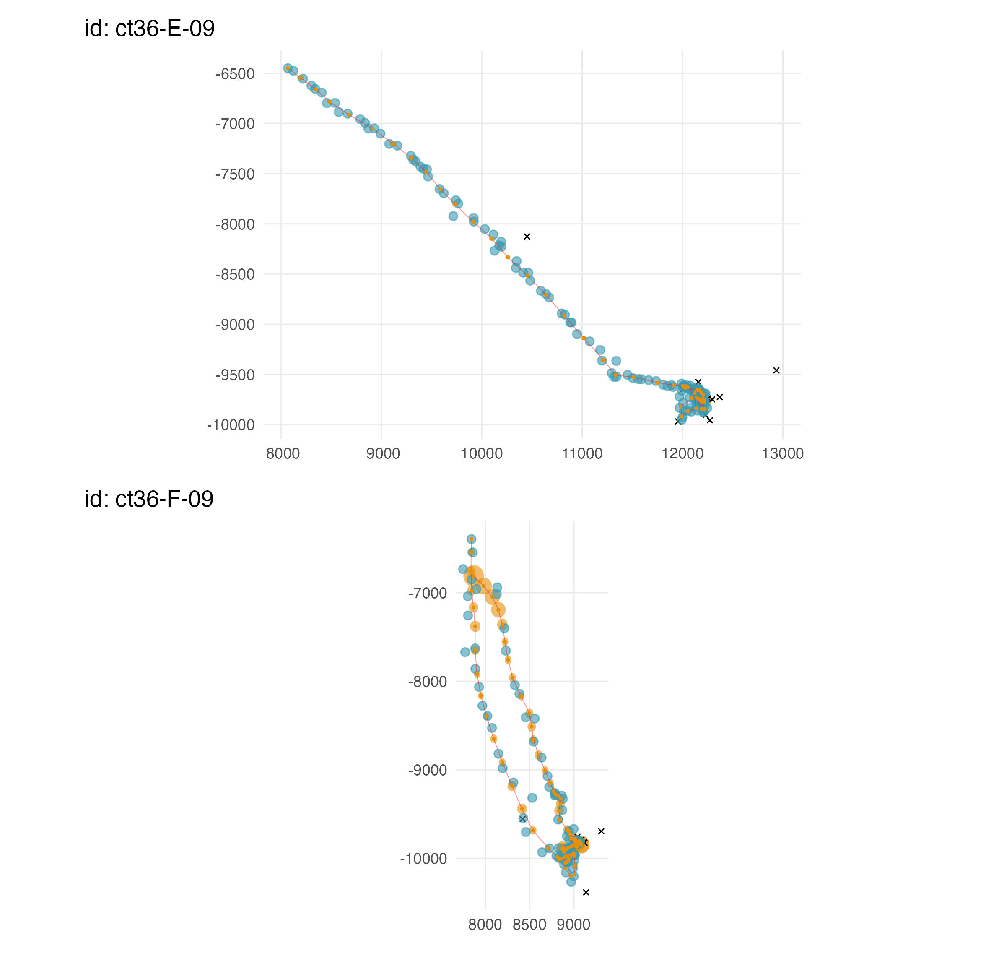

This vignette is an extended set of examples to highlight
aniMotum’s functionality. Please, do NOT interpret these
examples as instructions for conducting analysis of animal movement
data. Numerous essential steps in a proper analysis have been left out
of these vignettes. It is your job to understand your data, ensure you
are asking the right questions of your data, and that the analyses you
undertake appropriately reflect those questions. We can not do this for
you!
This is an overview of how to use aniMotum to filter
animal track locations obtained via the Argos satellite system or
(possibly) another tracking system. aniMotum provides three
state-space models (SSM’s), two for filtering (ie. estimating “true”
locations and associated movement model parameters, while accounting for
error-prone observations), and another for filtering and estimating move
persistence - an index of movement behaviour:
rw
crw
mp
the models are continuous-time models, that is, they account for the
time intervals between successive observations, thereby naturally
accounting for the often irregularly-timed nature of animal tracking
data. We won’t dwell on the details of the models here (see Jonsen et
al. 2020 for details on the crw model), except to say there
may be advantages to choosing one over the other in certain
circumstances. The Random Walk model tends not to deal well
with small to moderate gaps (relative to a specified time step) in
observed locations and can over-fit to particularly noisy data. The
Correlated Random Walk model can often deal better with these
small to moderate data gaps and appropriately smooth through noisy data
but tends to estimate nonsensical (i.e., ‘looping’ artefacts) movement
through longer data gaps, especially when animals are mostly stationary
during those gaps. The Move Persistence model can be more
robust to data gaps up to a point, and estimates time-varying move
persistence \(\gamma_t\) along the
track, which provides an index of how an animal’s movement behaviour
varies in space and time based on the autocorrelation of successive
movements. If you have Argos location data and your goal is to infer
changes in movement behaviour along tracks then estimating locations and
move persistence simultaneously within a state-space model is the
preferred approach, as location uncertainty is accounted for in the move
persistence estimates.
Additionally, aniMotum provides separate models
(mpm, jmpm) for estimating move persistence
after fitting either the rw or crw
SSM (see Jonsen et al. 2019 for details). Using the fit_mpm
function, the mpm is fit to individual tracks, whereas the
jmpm is fit to multiple tracks simultaneously with a
variance parameter that is estimated jointly across the tracks. This
latter model may better resolve subtle changes in movement behaviour
along tracks that lack much contrast in movements. Both models can be
fit to time-regularized locations or to time-irregular locations. See
Auger-Méthé et al. (2017) for an example of the latter. These models can
be fit to animal tracks, regardless of the geolocation technology used,
but they assume that locations are known without error.
aniMotum can accept input data in several possible
formats. Here, we outline the default formats but users are not
restricted to using these. Input data with variable names and/or column
ordering that differs from the defaults can be used, provided the
essential minimum data elements are present to allow the SSM’s to be
fitted: a unique animal/track identifier, date-time of each observation,
location quality class, and longitude and latitude (or projected x and
y) coordinates. We expand on these and additional variables in the
following sections.
A pre-processing function format_data() can be used to
correctly structure the input data for use in aniMotum.
This function checks for the presence of the essential variables,
converts date-time to POSIX format, maps custom variable
names onto the default names, and puts the variables into the default
column order expected by aniMotum. Users may choose to call
format_data() themselves, prior to fitting an SSM with
fit_ssm(), or they can allow fit_ssm() to
format the data automatically. We illustrate these approaches in the
“Fitting a model” section, below.
We’ll start out with the original Argos data, CLS Argos’
Least-Squares-based (LS) locations. These data contain the minimum
information required by aniMotum’s SSM’s. A minimal input
data.frame or tibble, containing only the
information required to fit the SSM, looks like this:
#> id date lc lon lat
#> 1 ct109-085-14 2015-02-03 00:11:02 B 70.45 -49.93
#> 2 ct109-085-14 2015-02-03 13:26:37 B 71.00 -50.21
#> 3 ct109-085-14 2015-02-03 21:53:15 B 71.31 -50.37
#> 4 ct109-085-14 2015-02-04 04:05:35 A 71.64 -50.43
#> 5 ct109-085-14 2015-02-04 17:12:42 B 72.04 -50.46
#> 6 ct109-085-14 2015-02-05 02:05:44 B 72.44 -50.47The (default) column names represent the following:
- id a unique identifier for each animal (or track) in the
data.frame
- date a date-time variable in the form
YYYY-mm-dd HH:MM:SS (or YYYY/mm/dd HH:MM:SS).
These can be text strings, in which case aniMotum converts
them to POSIX format and assumes the timezone is
UTC. If the date-times are from a local timezone then you
must specify this via the tz argument to
format_data(). A list of valid timezone names can be viewed
via OlsonNames().
- lc the location class variable common to Argos data, with
classes in the set: 3, 2, 1, 0, A, B, Z.
- lon the longitude variable
- lat the latitude variable
The lc values determine the measurement error variances
(based on independent data, see Jonsen et al. 2020) used in the SSM’s
for each observation.
Since 2011, the default Argos location data uses CLS Argos’ Kalman
Filter (KF) algorithm. These data include error ellipse information for
each observed location in the form of 3 variables: ellipse semi-major
axis length, ellipse semi-minor axis length, and ellipse orientation. A
minimal input data.frame or tibble for Argos
KF data looks like this:
#> id date lc lon lat smaj smin eor
#> 1 54591 2012-03-05 05:09:33 1 110.5707 -66.42752 2442 416 42
#> 2 54591 2012-03-06 04:55:14 0 110.3402 -66.39579 49660 391 90
#> 3 54591 2012-03-07 04:23:10 A 110.4778 -66.45266 5032 472 93
#> 4 54591 2012-03-07 21:23:06 A 110.3749 -66.39622 4007 286 116
#> 5 54591 2012-03-09 04:27:49 B 110.4732 -66.48743 13063 956 82
#> 6 54591 2012-03-10 00:10:41 A 110.5014 -66.43516 5099 478 79The column names follow those for Argos LS data, with the following
additions:
- smaj the Argos error ellipse semi-major axis length
(m)
- smin the Argos error ellipse semi-minor axis length
(m)
- eor the Argos error ellipse ellipse orientation (degrees
from N)
Here, the error ellipse parameters for each observation define the measurement error variances used in the SSM’s (Jonsen et al. 2020). Missing error ellipse values are allowed, in which case, those observations are treated as Argos LS data.
The aniMotum SSM’s can be fit to GPS location data, for
example to deal with (rare) extreme locations and/or to time-regularise
locations. The input data format is the same as for Argos LS data, but
the lc class is set to G for all GPS
locations:
#> id date lc lon lat
#> 1 F02-B-17 2023-06-12 14:17:41 G 70.1 -49.2
#> 2 F02-B-17 2023-06-12 15:17:41 G 70.6 -48.2
#> 3 F02-B-17 2023-06-12 16:17:41 G 71.1 -47.2
#> 4 F02-B-17 2023-06-12 17:17:41 G 71.6 -46.2
#> 5 F02-B-17 2023-06-12 18:17:41 G 72.1 -45.2The aniMotum SSM’s can be fit to processed light-level
geolocation data, when they include longitude and latitude error SD’s
(lonerr, laterr; units in degrees). In this
case, the lc class is set to GL for all
geolocation observations:
#> id date lc lon lat lonerr laterr
#> 1 54632 2023-06-12 14:17:41 GL 100.0 -55 0.04538146 0.04744647
#> 2 54632 2023-06-13 02:17:41 GL 100.5 -54 0.03152120 2.19785523
#> 3 54632 2023-06-13 14:17:41 GL 101.0 -53 1.22389975 0.43893001
#> 4 54632 2023-06-14 02:17:41 GL 101.5 -52 0.18392016 0.33539169
#> 5 54632 2023-06-14 14:17:41 GL 102.0 -51 0.28535005 2.69157584We caution users, that light-level geolocation errors can be (highly)
non-Gaussian, depending on the species, tag technology, and algorithm
used to estimate location from the light-level data. For example, we
have observed strongly non-Gaussian location uncertainty in tracks of
highly migratory tunas that traverse very different water masses in both
the vertical and horizontal directions. Because aniMotum’s
SSM’s assume bi-variate Normal location errors, fitting to geolocations
with non-Gaussian errors would not be appropriate and likely result in
highly biased location estimates. Geolocation data collected from birds
may be less prone to this issue, but we urge users to explore both the
uncertainty in their tracking data and the algorithm used to estimate
locations from light-level data.
Users can provide projected location data as an
sf-tibble or sf data.frame. By default,
aniMotum’s SSM’s fit to locations that are transformed to
the Mercator projection (EPSG 3395) and estimated locations are
back-transformed to spherical coordinates (lon, lat). When an
sf-projected data set is supplied, the
aniMotum SSM’s are fit to locations on the supplied
projection (aniMotum ensures that distance units are set to
km). Here is an example sf-tibble Argos data set in a polar
stereographic projection:
#> Simple feature collection with 6 features and 6 fields
#> Geometry type: POINT
#> Dimension: XY
#> Bounding box: xmin: 1110.769 ymin: -948.5686 xmax: 1118.995 ymax: -936.6922
#> Projected CRS: +proj=stere +lat_0=-60 +lon_0=85 +ellps=WGS84 +units=km +no_defs
#> # A tibble: 6 × 7
#> id date lc smaj smin eor geometry
#> <chr> <dttm> <chr> <dbl> <dbl> <dbl> <POINT [km]>
#> 1 54591 2012-03-05 05:09:33 1 2442 416 42 (1118.995 -944.0405)
#> 2 54591 2012-03-06 04:55:14 0 49660 391 90 (1110.769 -936.6922)
#> 3 54591 2012-03-07 04:23:10 A 5032 472 93 (1114.021 -945.0264)
#> 4 54591 2012-03-07 21:23:06 A 4007 286 116 (1112.198 -937.343)
#> 5 54591 2012-03-09 04:27:49 B 13063 956 82 (1112.307 -948.5686)
#> 6 54591 2012-03-10 00:10:41 A 5099 478 79 (1115.773 -943.6181)Users can fit SSM’s to data where a combination of Argos, GPS or light-level geolocation observations are inter-mixed. Below is an example of mixed Argos KF and GPS observations, as one might obtain from a double-tagged individual:
#> id date lc lon lat smaj smin eor
#> 1 F02-B-17 2017-09-17 05:20:00 G 70.1 -49.2 NA NA NA
#> 2 F02-B-17 2017-10-04 14:35:01 2 70.2 -49.1 1890 45 77
#> 3 F02-B-17 2017-10-05 04:03:25 G 70.1 -49.3 NA NA NA
#> 4 F02-B-17 2017-10-05 06:28:20 A 71.1 -48.7 28532 1723 101
#> 5 F02-B-17 2017-10-05 10:21:18 B 70.8 -48.5 45546 3303 97These mixtures are possible because the aniMotum SSM’s
apply the most appropriate measurement error model for each observation,
based on its location class and error information (i.e., numeric values
vs NA’s).
Model fitting for quality control of locations is comprised of 3
steps: a data formatting step, a pre-filtering step, and the actual
model fitting step. A number of checks are made on the input data during
the formatting and pre-filtering steps, including applying the
trip::sda filter to identify extreme observations (see
?fit_ssm for details). The pre-filter step is fully
automated, although various arguments can be used to modify it’s
actions, and called via the fit_ssm function:
## format, prefilter and fit Random Walk SSM using a 24 h time step
fit <-
fit_ssm(
x = ellie,
model = "rw",
time.step = 24
)These are the minimum arguments required: the input data, the model
(rw, crw, or mp) and the
time.step (in h) to which locations are predicted. Additional control
can be exerted over the data formatting and pre-filtering steps, via the
id, date, lc, coord,
epar and sderr variable name arguments, and
via the vmax, ang, distlim,
min.dt, and spdf pre-filtering arguments (see
?fit_ssm for details). The defaults for these arguments are
quite conservative (for non-flying species), usually leading to relative
few observations being flagged to be ignored by the SSM. Additional
control over the optimization can also be exerted via the
control = ssm_control() argument, see see
vignette('SSM_fitting') and ?ssm_control for
more details.
Users do not need to adhere to the default aniMotum data
formatting presented above, so long as their input data contain the
essential variables. The variables can have arbitrary names and be in
any order. Here is an example using a custom formatted
data.frame of Argos LS data as input:
data(sese2_n)
sese2_n
#> # A tibble: 295 × 5
#> longitude latitude time lc id
#> <dbl> <dbl> <chr> <fct> <chr>
#> 1 72.5 -50.2 2009-02-01 17:50:46 A ct36-E-09
#> 2 73.0 -50.4 2009-02-02 03:30:26 A ct36-E-09
#> 3 73.8 -50.8 2009-02-02 17:50:48 B ct36-E-09
#> 4 74.6 -51.2 2009-02-03 07:39:08 A ct36-E-09
#> 5 74.9 -51.4 2009-02-03 15:29:59 A ct36-E-09
#> 6 75.5 -51.6 2009-02-04 01:21:08 A ct36-E-09
#> 7 76.0 -52.2 2009-02-04 16:34:15 A ct36-E-09
#> 8 76.7 -52.2 2009-02-04 21:05:50 A ct36-E-09
#> 9 77.0 -52.7 2009-02-05 10:57:22 A ct36-E-09
#> 10 77.8 -52.8 2009-02-05 16:03:58 A ct36-E-09
#> # ℹ 285 more rowsNote the columns are in a different order than the default expected
by aniMotum, and the first three variables have different
names: longitude, latitude and
time. There are two approaches to format these data. The
first, is to call format_data as a data pre-processing step
prior to fitting an SSM. The data are linked to the expected names via
the following arguments to format_data: id,
date, lc, coord,
epar and sderr. In this example, we only need
to use the date and coord arguments:
d <- format_data(sese2_n, date = "time", coord = c("longitude", "latitude"))
d
#> # A tibble: 295 × 10
#> id date lc lon lat smaj smin eor lonerr laterr
#> <chr> <dttm> <fct> <dbl> <dbl> <dbl> <dbl> <dbl> <dbl> <dbl>
#> 1 ct36-E… 2009-02-01 17:50:46 A 72.5 -50.2 NA NA NA NA NA
#> 2 ct36-E… 2009-02-02 03:30:26 A 73.0 -50.4 NA NA NA NA NA
#> 3 ct36-E… 2009-02-02 17:50:48 B 73.8 -50.8 NA NA NA NA NA
#> 4 ct36-E… 2009-02-03 07:39:08 A 74.6 -51.2 NA NA NA NA NA
#> 5 ct36-E… 2009-02-03 15:29:59 A 74.9 -51.4 NA NA NA NA NA
#> 6 ct36-E… 2009-02-04 01:21:08 A 75.5 -51.6 NA NA NA NA NA
#> 7 ct36-E… 2009-02-04 16:34:15 A 76.0 -52.2 NA NA NA NA NA
#> 8 ct36-E… 2009-02-04 21:05:50 A 76.7 -52.2 NA NA NA NA NA
#> 9 ct36-E… 2009-02-05 10:57:22 A 77.0 -52.7 NA NA NA NA NA
#> 10 ct36-E… 2009-02-05 16:03:58 A 77.8 -52.8 NA NA NA NA NA
#> # ℹ 285 more rowsWe then fit the SSM to the formatted data d via
fit_ssm:
fit <- fit_ssm(d,
model = "crw",
time.step = 24)Alternatively, we can use a shortcut and have fit_ssm
format the sese2_n data by adding the variable name
arguments to the call:
fit <- fit_ssm(sese2_n,
date = "time",
coord = c("longitude","latitude"),
model = "crw",
time.step = 24)Original variable names are not preserved in the output object
fit but rather transformed to the default expected names.
The grab function can be used to access the data and the
SSM estimates (see Access Results, below).
fit_ssm can be applied to single or multiple tracks,
without modification. The specified SSM is fit to each individual
separately and the resulting output is a compound tibble
with rows corresponding to each individual ssm_df fit
object. The converged column indicates whether each model
fit converged successfully.
## fit to data with two individuals
fit <- fit_ssm(sese2,
model = "crw",
time.step=24,
control = ssm_control(verbose = 0))
## list fit outcomes for both seals
fit
#> # A tibble: 2 × 5
#> id ssm converged pdHess pmodel
#> <chr> <named list> <lgl> <lgl> <chr>
#> 1 ct36-E-09 <ssm [15]> TRUE TRUE crw
#> 2 ct36-F-09 <ssm [15]> TRUE TRUE crwIndividual id is displayed in the 1st column, all fit
output resides in a list (ssm) in the 2nd column,
convergence status (whether the optimizer found a global
minimum) of each model fit is displayed in the 3rd column, whether the
Hessian matrix was positive-definite and could be solved to obtain
parameter standard errors (pdHess) is displayed in the 4th
column, and the specified process model (rw,
crw, or mp) in the 5th column. In some cases,
the optimizer will converge but the Hessian matrix is not
positive-definite, which typically indicates the optimizer converged on
a local minimum. In this case, some standard errors may be calculated
but not all. One possible solution is to try specifying a longer
time.step or set time.step = NA to turn off
predictions and return only fitted values (location estimates at the
pre-filtered observation times). If pdHess = FALSE persists
then careful inspection of the supplied data is warranted to determine
if suspect observations not identified by prefilter are
present. The excellent glmmTMB
troubleshooting vignette may also provide hints at solutions.
Convergence failures should be examined for potential data issues,
however, in some cases changes to the optimization parameters via
ssm_control() (see ?fit_ssm and
?ssm_control on usage) may overcome mild issues (see
?nlminb or ?optim for details on optimization
control parameters).
Summary information about the fit can be obtained via the
summary function:
summary(fit)
#> Animal id Model Time n.obs n.filt n.fit n.pred n.rr converged AICc
#> ct36-E-09 crw 24 170 26 144 58 . TRUE 2952.2
#> ct36-F-09 crw 24 125 24 101 110 . TRUE 2392.4
#>
#> --------------
#> ct36-E-09
#> --------------
#> Parameter Estimate Std.Err
#> D 0.2061 0.0358
#> rho_o 0.1326 0.1183
#> tau_x 0.9748 0.0779
#> tau_y 0.6788 0.0579
#>
#> --------------
#> ct36-F-09
#> --------------
#> Parameter Estimate Std.Err
#> D 0.0854 0.0157
#> rho_o 0.3656 0.1298
#> tau_x 1.4332 0.1481
#> tau_y 2.096 0.2137The summary table lists information about the fit, including the
number of observations in the input data (n.obs), the
number of observation flagged to be ignored by the SSM
(n.filt), the number of fitted location estimates
(n.fit), the number of predicted location estimates
(n.pred), the number of rerouted location estimates (if
present, n.rr), model convergence status, and AICc. When
fitting to multiple individuals, these statistics are repeated on
separate lines for each individual. Separate tables of SSM parameter
estimates and their SE’s are also printed for each individual. The
parameter estimates displayed vary depending on the SSM process model
selected by the user (rw, crw, or
mp) and the automatically chosen measurement model(s).
Here, sigma_x and sigma_y are the process
error standard deviations in the x and y directions, rho_p
is the correlation parameter in the covariance term. The
Std. Error column lists the standard errors, calculated via
the Delta method (see TMB documentation for details), for each estimated
parameter.
fit_ssm usually returns two sets of estimated locations
in the model fit object: fitted values and predicted values. The fitted
values occur at the times of the observations to which the SSM was fit
(i.e., the observations that passed the pre-filter step). The predicted
values occur at the regular time intervals specified by the
time.step argument. If time.step = NA, then no
predicted values are estimated or returned in the model fit object.
Users can obtain the fitted or predicted locations as a data.frame by
using grab():
## grab fitted locations
floc <- grab(fit, what = "fitted")
floc[1:5,]
#> # A tibble: 5 × 14
#> id date lon lat x y x.se y.se u v
#> <chr> <dttm> <dbl> <dbl> <dbl> <dbl> <dbl> <dbl> <dbl> <dbl>
#> 1 ct36-… 2009-02-01 17:50:46 72.5 -50.2 8069. -6450. 0.485 0.482 0.339 -0.233
#> 2 ct36-… 2009-02-02 03:30:26 72.8 -50.4 8108. -6477. 11.7 9.55 4.04 -2.80
#> 3 ct36-… 2009-02-02 17:50:48 73.7 -50.8 8199. -6549. 19.0 14.1 6.41 -5.00
#> 4 ct36-… 2009-02-03 07:39:08 74.5 -51.2 8291. -6619. 14.9 10.4 6.65 -5.09
#> 5 ct36-… 2009-02-03 15:29:59 74.9 -51.4 8339. -6655. 13.9 9.65 6.12 -4.64
#> # ℹ 4 more variables: u.se <dbl>, v.se <dbl>, s <dbl>, s.se <lgl>
## grab predicted locations in projected form
ploc <- grab(fit, what = "predicted", as_sf = TRUE)
ploc[1:5,]
#> Simple feature collection with 5 features and 10 fields
#> Geometry type: POINT
#> Dimension: XY
#> Bounding box: xmin: 8068.437 ymin: -6912.527 xmax: 8675.541 ymax: -6449.872
#> Projected CRS: +proj=merc +lon_0=0 +datum=WGS84 +units=km +no_defs
#> # A tibble: 5 × 11
#> id date u v u.se v.se x.se y.se
#> <chr> <dttm> <dbl> <dbl> <dbl> <dbl> <dbl> <dbl>
#> 1 ct36-E… 2009-02-01 17:00:00 9.73e-11 -6.67e-11 1.00e-5 1.00e-5 1.00e-5 1.00e-5
#> 2 ct36-E… 2009-02-02 17:00:00 6.38e+ 0 -4.98e+ 0 1.12e+0 9.47e-1 1.83e+1 1.36e+1
#> 3 ct36-E… 2009-02-03 17:00:00 6.06e+ 0 -4.63e+ 0 1.31e+0 1.16e+0 1.43e+1 1.01e+1
#> 4 ct36-E… 2009-02-04 17:00:00 5.74e+ 0 -5.36e+ 0 1.03e+0 8.38e-1 1.33e+1 9.30e+0
#> 5 ct36-E… 2009-02-05 17:00:00 9.34e+ 0 -5.43e+ 0 1.20e+0 1.09e+0 1.28e+1 9.14e+0
#> # ℹ 3 more variables: s <dbl>, s.se <lgl>, geometry <POINT [km]>Here, the output from the crw SSM is returned as a
fitted location data.frame (floc) that includes individual id, date,
longitude, latitude, x and y (typically from the default Mercator
projection) and their standard errors (x.se,
y.se in km), u, v (and their
standard errors, u.se, v.se in km/h) are
estimates of signed velocity in the x and y directions. The
u, v velocities should generally be ignored as
their estimation uses time intervals between consecutive locations,
whether they are observation times or prediction times. The columns
s and s.se provide a more reliable 2-D
velocity estimate, although standard error estimation is turned off by
default as this generally increases computation time for the
crw SSM. Standard error estimation for s can
be turned on via the control argument to
fit_ssm
(i.e. control = ssm_control(se = TRUE), see
?ssm_control for futher details).
The predicted location data.frame (ploc) is an sf-tibble
with geometry and Coordinate Reference System information. This
sf output format can be useful for custom mapping or
calculating derived variables from the estimated locations.
The formatted and prefiltered version of the input data can also be extracted from the output:
fp.data <- grab(fit, what = "data")
fp.data[1:5,]
#> # A tibble: 5 × 14
#> id date lc lon lat smaj smin eor obs.type keep
#> <chr> <dttm> <chr> <dbl> <dbl> <dbl> <dbl> <dbl> <chr> <lgl>
#> 1 ct36-E… 2009-02-01 17:50:46 A 72.5 -50.2 NA NA NA LS TRUE
#> 2 ct36-E… 2009-02-02 03:30:26 A 73.0 -50.4 NA NA NA LS TRUE
#> 3 ct36-E… 2009-02-02 17:50:48 B 73.8 -50.8 NA NA NA LS TRUE
#> 4 ct36-E… 2009-02-03 07:39:08 A 74.6 -51.2 NA NA NA LS TRUE
#> 5 ct36-E… 2009-02-03 15:29:59 A 74.9 -51.4 NA NA NA LS TRUE
#> # ℹ 4 more variables: x <dbl>, y <dbl>, emf.x <dbl>, emf.y <dbl>Here, fp.data is in the form that is passed to the
crw SSM. The first 5 columns (id,
date, lc, lon, lat)
are preserved from the formatted input data, and the error ellipse
parameter columns (smaj, smin,
eor) are appended and filled with NA’s, if missing from the
input data. The observation type, obs.type, is determined
for each observation during the prefiltering stage based on the
combination of lc value and the presence of error ellipse
parameters with non-NA values. The keep column indicates
whether each record passed the pre-filtering stage (see
?prefilter for details), observations with
keep = FALSE are ignored by the SSM. The
x,y columns are the Mercator-projected
coordinates (in km) that fitted to by the SSM. The emf.x
and emf.y columns are the error multiplication factors used
to scale the measurement error variances, used by the SSM, for each
Argos Least-Squares location class - these are relevant only for
obs.type = 'LS' and for GPS observations.
A generic plot (see ?plot.ssm_df) method
allows a quick visual of the SSM fit to the data:
# plot time-series of the fitted values
plot(fit, what = "fitted", type = 1, pages = 1) Here,
the fitted values (state estimates corresponding to the time of each
observation; orange points) are plotted on top of the observations that
passed the prefilter stage (blue points and blue rug at
bottom) and as separate time-series for the x and y coordinates by
default. Uncertainty in the estimates is displayed as 2 x SE intervals
(orange-filled ribbon). Observations that failed the
prefilter stage are also displayed (black x’s and black rug
at bottom).
A 2-D time series plot of the track is invoked by the argument
type = 2:
# plot fitted values as a 2-d track
plot(fit, what = "predicted", type = 2, pages = 1) The
predicted values (orange points) are the state estimates predicted at
regular time intervals, specified by time.step (here a 24 h
interval). 95 % confidence ellipses (orange-filled ellipses) around the
predicted values are also displayed, but can be faded away by choosing a
low alpha value (e.g.,
plot(fit, what = "predicted", type = 2, alpha = 0.05)).
Observations that failed the prefilter stage are displayed
(black x’s) by default but can be turned off with the argument
outlier = FALSE).
Auger-Méthé M, Albertsen CM, Jonsen ID, Derocher AE, Lidgard DC, Studholme KR, Bowen WD, Crossin GT, Flemming JM (2017) Spatiotemporal modelling of marine movement data using Template Model Builder (TMB). Marine Ecology Progress Series 565:237-249.
Jonsen ID, McMahon CR, Patterson TA, Auger-Méthé M. Harcourt R, Hindel MA, Bestley S (2019) Movement responses to environment: fast inference of variation among southern elephant seals with a mixed effect model. Ecoloogy 100:e02566.
Jonsen ID, Patterson TA, Costa DP, Doherty PD, Godley BJ, Grecian WJ, Guinet C, Hoenner X, Kienle SS, Robinson PW, Votier SC, Whiting S, Witt MJ, Hindel MA, Harcourt RG, McMahon CR (2020) A continuous-time state-space model for rapid quality control of Argos locations from animal-borne tags. Movement Ecology 8:31.